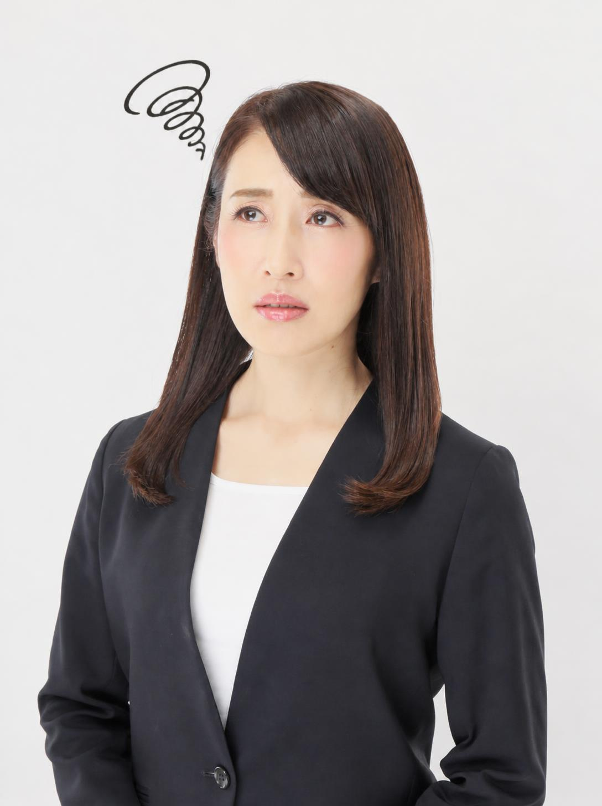
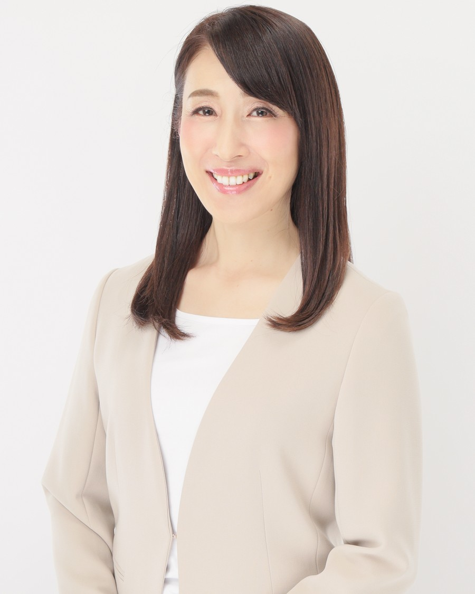
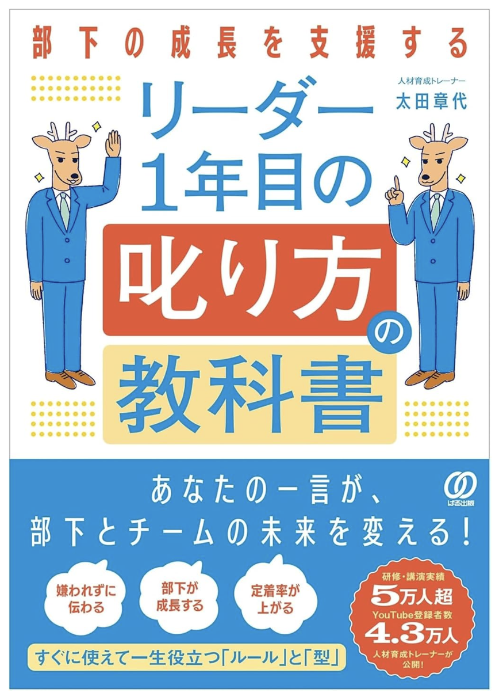
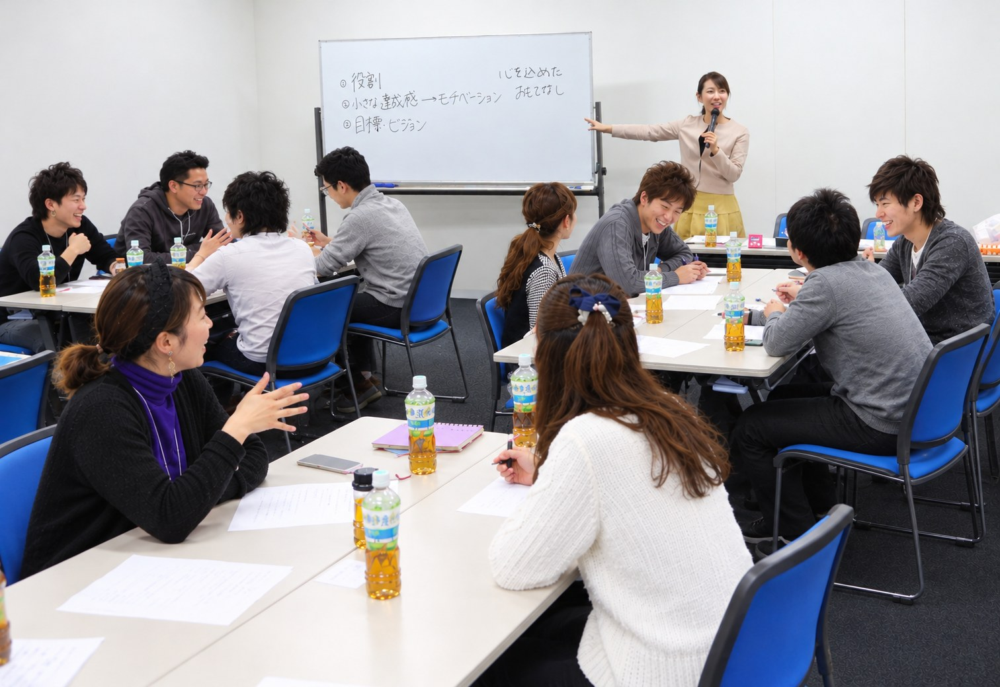

私は30歳で、はじめて営業部のリーダーになりました。
リーダーになってからは、部下の改善点が目につくのに、
叱る勇気が出せず、見て見ぬふりをしていました。
見かねた上司に言われたのは、「リーダーの役割として、嫌われ者になりなさい」。勇気を出して伝えたものの、叱り方を知らず、強い言葉になってしまいました。
売上が伸びない部下も、悩む私も、誰も幸せになっていませんでした。
そんな私が、大切にしている叱り方をお伝えし、一緒に考えます。
『叱り方の教科書』出版記念セミナー
部下が伸びる伝え方を習得する90分
12/5（土）10:30〜12:00


人材育成トレーナー太田章代
アイキャリア株式会社 代表取締役
何も言わない
「優しい」リーダー
叱って成長を
支援するリーダー
部下が求めているのは、ただ優しい上司ではありません。
自分に向き合い、成長の支援をしてくれる上司です。

私は30歳で、はじめて営業部のリーダーになりました。
リーダーになってからは、部下の改善点が目につくのに、
叱る勇気が出せず、見て見ぬふりをしていました。
見かねた上司に言われたのは、「リーダーの役割として、嫌われ者になりなさい」。勇気を出して伝えたものの、叱り方を知らず、強い言葉になってしまいました。
売上が伸びない部下も、悩む私も、誰も幸せになっていませんでした。
そんな私が、大切にしている叱り方をお伝えし、一緒に考えます。
ぱる出版
あなたの一言が、部下とチームの未来を変える！
本に書いたのは、理想論ではありません。
リーダーとして部下との関係に悩み、自分の未熟さに落ち込み、失敗を重ねながら見つけた答えです。
その答えを、多くの研修の現場で実践と検証を重ね、再現しやすい方法に進化させました。
この本の出版を記念して、
セミナーを開催します。
関係を壊さずに伝えるコツを、
具体例で学ぶ90分。
叱り方の基本の考え方から、「何度言っても直らない」「言い訳ばかり」といった職場でよくある場面での伝え方まで。
明日から使える言い方を持ち帰っていただけます。
セミナープログラム

全国の企業・団体で、研修・講演に登壇を重ねてきました。テレビ・ラジオ・新聞・雑誌など、出演・取材多数。
登壇実績
デンソー／日立製作所／NTT西日本／ブリヂストンタイヤジャパン／ソフトバンク／マキタ／日本ガイシ／タカラスタンダード ほか リピート講演も多数
メディア
テレビ朝日／J-WAVE／朝日新聞／PHP研究所「THE21」／小学館DIME／週刊女性 ほか
著書『叱り方の教科書』（ぱる出版）を出版
参加いただけます。部下や後輩への伝え方はもちろん、同僚とのやりとりや、個人事業主の方が取引先などに伝える場面にも活かせます。
本をお持ちでなくても参加できます。お申込みのときに「サイン本購入つきで参加（2,760円・本代込み）」をお選びください。
事前決済です。クレジットカード（PayPal）または銀行振込をお選びいただけます。※PayPalアカウントをお持ちでない方も、クレジットカードでお支払いいただけます。
※コンビニ払いには対応しておりません。
はい、できます。法人・複数名でのお申込み（請求書払い）は、office@i-career.co.jp までご連絡ください。
太田章代より、皆様へ
人材育成トレーナーの太田章代です。
部下の問題に気づいているのに、言えない。
勇気を出して言ったあとも、「言い方がまずかったかな」とひとりで悩んでしまう。
そんなリーダーの方から、たくさんのご相談をいただきます。
でも、叱れないのは、あなたが部下を大切に思っているからです。
傷つけたくない。嫌われたくない。関係を壊したくない。
その気持ちは、リーダーとして決して間違っていません。
ただ、何も言わないままでは、部下は成長するチャンスを失ってしまいます。
そして、あなた自身も、ずっと一人で悩み続けることになります。
私も、かつてそうでした。
見て見ぬふりをして、やっと口にしたら、強い言葉になってしまって。
部下も私も、誰も幸せになれませんでした。
だから、伝えたいのです。
叱ることは、相手を否定することではありません。
「あなたなら、もっとできる」と信じて、相手の未来のために伝えることです。
この想いを、著書『叱り方の教科書』に込めました。
伝え方に、ひとつの正解はありません。
だからこそ当日は、皆さんと語り合いながら、私自身も一緒に学ばせていただきます。
部下のことで悩んでいる、あなたにこそ来ていただきたい。
当日、会場でお会いできることを心から楽しみにしています。
著者／アイキャリア株式会社 代表取締役
太田章代
『叱り方の教科書』
出版記念セミナー
日時：12/5（土）10:30〜12:00
会場：イケダヤ品川ビル西棟4F
東京都港区港南2丁目12-27（品川駅 徒歩10分）
参加費：本を持参して参加 1,000円／
サイン本購入つきで参加 2,760円（本代込み）